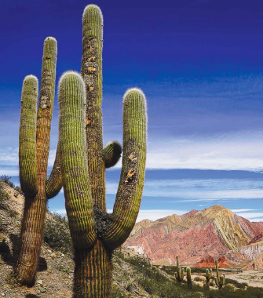
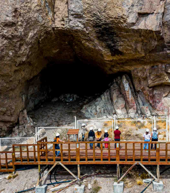
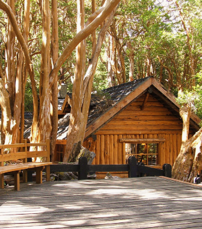
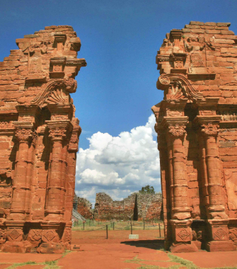
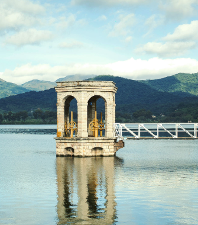
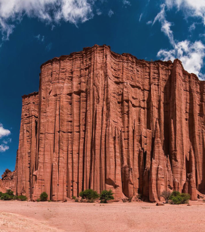
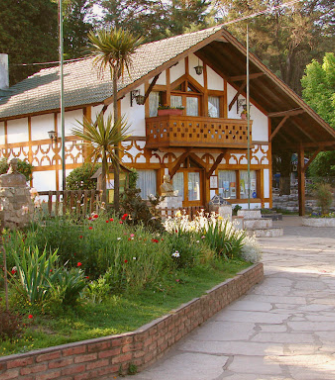
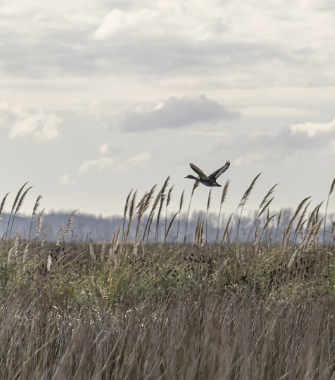

Lugares imperdibles
- 
- 
- 
- 
- 
- 
- 
- 
Parque Nacional Los Cardones, Salta
Un extenso desierto repleto de cactus gigantes y montañas de colores.
Cueva de las Manos, Santa Cruz
Sitio arqueológico con pinturas rupestres de más de 9.000 años de antigüedad.
Bosques de Arrayanes, Neuquén
Un bosque único con árboles de corteza color canela, accesible en barco o caminando.
San Ignacio Miní, Misiones
Ruinas jesuíticas que muestran la historia de las misiones guaraníes en Argentina.
Dique La Ciénaga, Jujuy
Un espejo de agua rodeado de cerros, ideal para el descanso y la recreación.
Parque Nacional Talampaya, La Rioja
Un increíble desierto rojizo con formaciones geológicas imponentes y petroglifos milenarios.
Villa General Belgrano, Córdoba
Un pueblo con arquitectura centroeuropea, famoso por su Oktoberfest y su gastronomía típica.
Reserva Natural Otamendi, Buenos Aires
Un área protegida cercana a la ciudad, ideal para avistaje de aves y caminatas por la naturaleza.